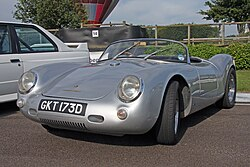

Porsche foi fundada em 1931 por Ferdinand Porsche e seu filho Ferry Porsche. Ferdinand Porsche já era conhecido antes de fundar a Porsche, ele havia trabalhado para outras marcas. Havia também lançado em 1900 o primeiro automóvel híbrido.

Em 1953, a Porsche lança o 550 Spyder, modelo responsável por um grande número de vitórias na competição automóvel. Este modelo tinha como principal característica, possuir quatro árvores de cames ao invés de uma central.
Clicando nesse link, você voltará para a primeira página. AQUI.